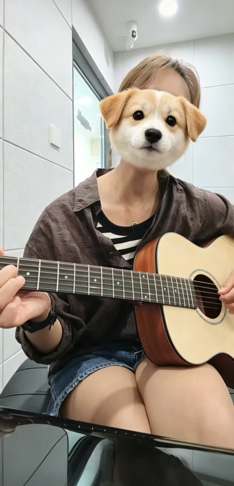
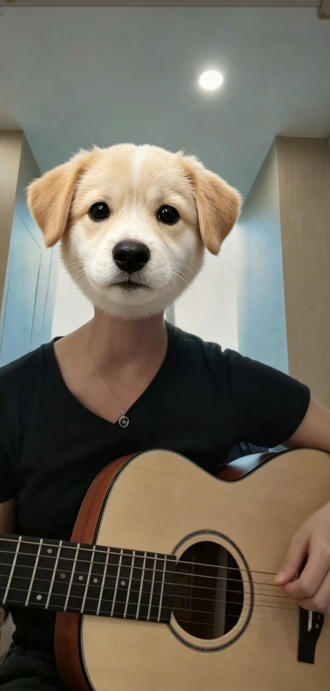
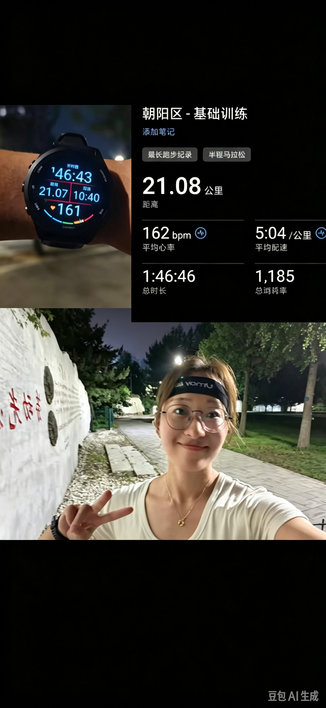

OFF THE RECORD / 03
生活
不搞科研的时候，我在写这些东西、拍这些照片。
本页暂不讨论显著性。
音乐 · 换个频道
实验讲究重复，练琴也是。偶尔换一种声音，继续保持好奇。
架子鼓
吉他
滤镜负责可爱，手指负责和弦。


跑步 · 出去转转
有些思路，坐着想不通，就出去跑一跑。

随笔
摄影


OFF THE RECORD / 03
不搞科研的时候，我在写这些东西、拍这些照片。
本页暂不讨论显著性。
实验讲究重复，练琴也是。偶尔换一种声音，继续保持好奇。
滤镜负责可爱，手指负责和弦。


有些思路，坐着想不通，就出去跑一跑。
